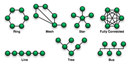

|  | In telecomunicazioni la topologia di rete e il modello geometrico finalizzato a rappresentare le relazioni di connettivita, fisica o logica, tra gli elementi costituenti la rete stessa (detti anche nodi). Il concetto di topologia si applica a qualsiasi tipo di rete di telecomunicazioni: telefonica, rete di computer, Internet eccetera. |